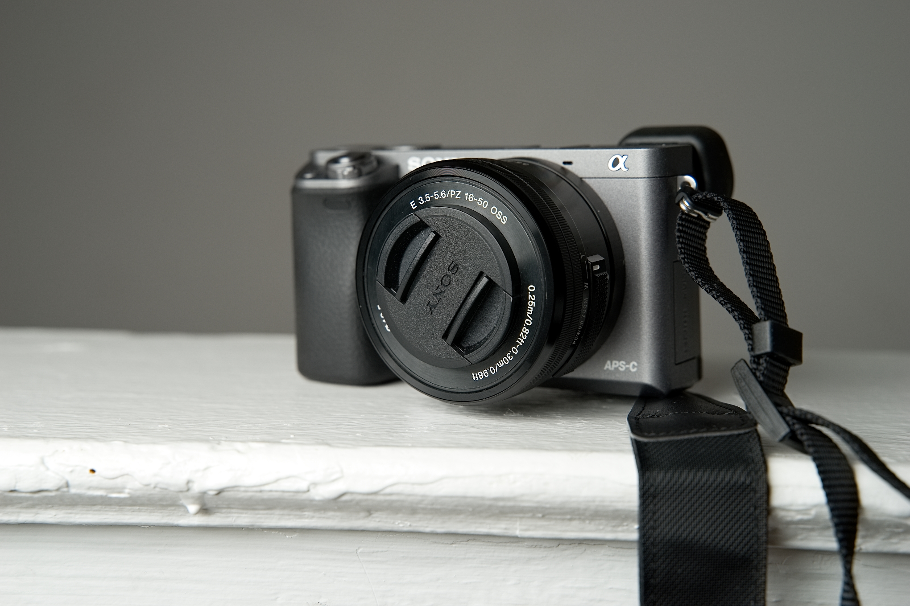
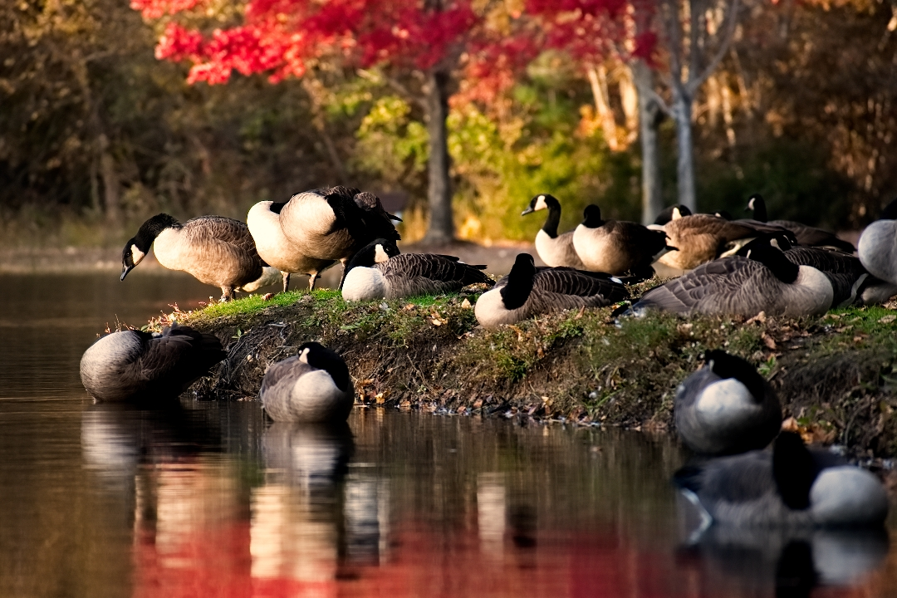

Tips and Tricks
A few simple tips and tricks can help elevate your work! Find more about it here!
Why I love wildlife photography
Wildlife photography brought a whole new meaning to bird watching for me...
Why you should take to the streets
Street photography is challenging but it can be total worth it.